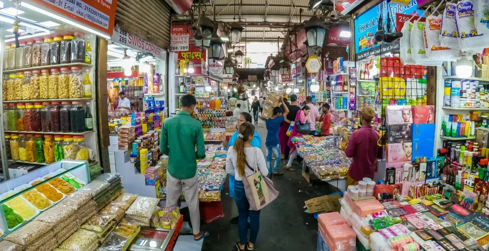
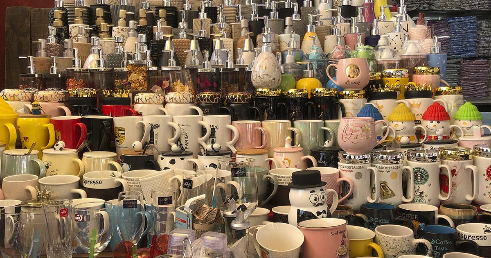
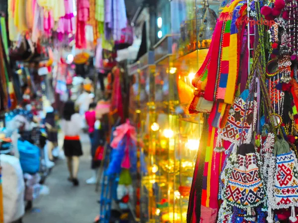

Crawford Market



🛍️ Introduction
Crawford Market, now officially known as Mahatma Jyotiba Phule Mandai, is one of the oldest and most famous markets in Mumbai. It offers a wide range of goods — from fruits to pets to home decor.
📜 History
Built in 1869, the market was named after Arthur Crawford, the first Municipal Commissioner of Mumbai. It features stunning Norman and Flemish architecture, and parts of it were designed by Lockwood Kipling, father of writer Rudyard Kipling.
🕒 Best Time to Visit
- Morning for fresh produce
- Weekdays to avoid weekend rush
- October to March for comfortable weather
🧺 Things to Do
- Buy fresh fruits, vegetables, and dry fruits
- Shop for imported goods and stationery
- Explore the pet and poultry section
- Admire the old colonial architecture